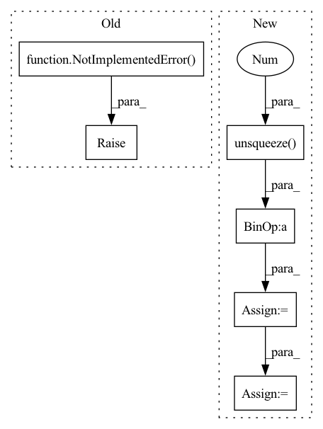

Pattern ID :22576

Before Change
if not matrix:
return pairwise_distance(x, y, p=2)
raise NotImplementedError()
@staticmethod
def manhattan(x: Tensor, y: Tensor, matrix=False) -> Tensor:
Compute manhattan distance
After Change
// get L2 norm by diagonal. Shape: (batch_size,)
square_norm = torch.diagonal(dot_product)
// calculate distances. Shape: (batch_size, batch_size)
distances = (
square_norm.unsqueeze(0) - 2.0 * dot_product + square_norm.unsqueeze(1)
)
// get rid of negative distances due to calculation errors
distances = torch.maximum(distances, torch.tensor(0.0))
if not squared:
// handle numerical stability
In pattern: SUPERPATTERN
Frequency: 3
Non-data size: 6
Instances
Fragment ID: 71355157
Project Name: qdrant/quaterion
Commit Name: b1533b50ba29a80c44c1cd100527a7737e8313f5
Time: 2022-02-22
Author: yusufsarigoz@gmail.com
File Name: quaterion/loss/metrics.py
M Class Name: SiameseDistanceMetric
N Class Name: SiameseDistanceMetric
M Method Name: euclidean(4)
N Method Name: euclidean(3)
M Parent Class:
N Parent Class:
M File Name: quaterion/loss/metrics.py
N File Name: quaterion/loss/metrics.py
M Start Line: 11
M End Line: 23
N Start Line: 12
N End Line: 58
'>
Before Change
if not matrix:
return torch.pairwise_distance(x, y, p=1)
raise NotImplementedError()
@staticmethod
def cosine_distance(x: Tensor, y: Tensor = None, matrix=False) -> Tensor:
Compute cosine distance
After Change
// expand dimensions to calculate element-wise diffrences with broadcasting
// shape: (batch_size, batch_size, vector_dim)
deltas = x.unsqueeze(1) - y.unsqueeze(0)
abs_deltas = torch.abs(deltas)
// sum across the last dimension for reduction
// shape: (batch_size, batch_size)
distances = abs_deltas.sum(dim=-1)
return distances
'>
Fragment ID: 71355159
Project Name: qdrant/quaterion
Commit Name: 032343e6e07e8e226b303d334d52acdab37106d9
Time: 2022-03-14
Author: yusufsarigoz@gmail.com
File Name: quaterion/loss/metrics.py
M Class Name: SiameseDistanceMetric
N Class Name: SiameseDistanceMetric
M Method Name: manhattan(3)
N Method Name: manhattan(3)
M Parent Class:
N Parent Class:
M File Name: quaterion/loss/metrics.py
N File Name: quaterion/loss/metrics.py
M Start Line: 61
M End Line: 73
N Start Line: 61
N End Line: 93
'>
Before Change
mean: Tensor,
cov: Tensor,
kwargs: Dict[str, Tensor]) -> Tuple[Tensor, Tensor]:
raise NotImplementedError("TODO")
def predict(self, mean: Tensor, cov: Tensor, kwargs: Dict[str, Tensor]) -> Tuple[Tensor, Tensor]:
raise NotImplementedError("TODO")
After Change
mean: Tensor,
cov: Tensor,
kwargs: Dict[str, Tensor]) -> Tuple[Tensor, Tensor]:
measured_mean = (kwargs["H"] @ mean.unsqueeze(-1)).squeeze(-1)
resid = input - measured_mean
new_mean = mean + (kwargs["K"] @ resid.unsqueeze(-1)).squeeze(-1)
new_cov = torch.zeros_like(cov)
return new_mean, new_cov
'>
Fragment ID: 71355161
Project Name: strongio/torchcast
Commit Name: 8210da6ee85f13f07cdbd7b237b9abc6ad07be3b
Time: 2021-06-18
Author: jacob.dink@strong.io
File Name: torchcast/exp_smooth/exp_smooth.py
M Class Name: ExpSmoothStep
N Class Name: ExpSmoothStep
M Method Name: _update(5)
N Method Name: _update(5)
M Parent Class: StateSpaceStep
N Parent Class: StateSpaceStep
M File Name: torchcast/exp_smooth/exp_smooth.py
N File Name: torchcast/exp_smooth/exp_smooth.py
M Start Line: 45
M End Line: 45
N Start Line: 40
N End Line: 44